Somain 2007

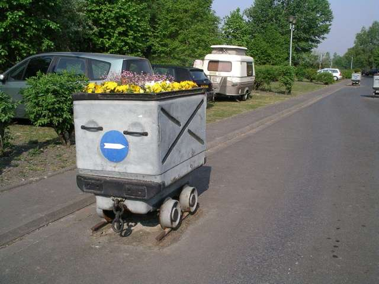
Somain est accueillant et conserve des vestiges de son passé minier, comme les terrils ou ces wagonnets, égayés toutefois d'une galerie fleurie !

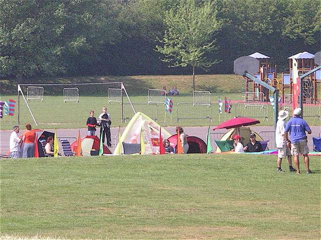
Tout le monde s'installe sur le terrain. La sono est cette fois répartie et moins bruyante mais plus compréhensible. On revoit ce delta gonflé (à l'air seulement !), mais l'année dernière il comportait aussi un tube central, cette année juste une quille, c'est plus simple ?

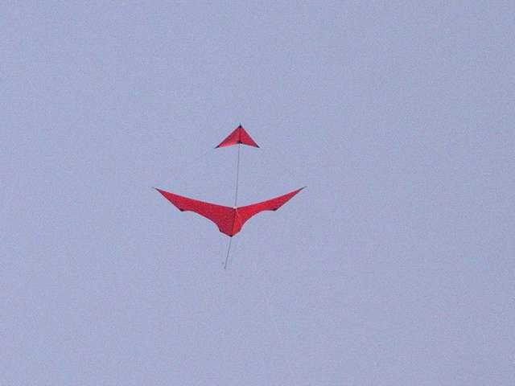
Malgré le vent ultra-faible, on voit sortir cette flèche pourtant dotée de surfaces portantes très limitées, l'armature doit être fine...

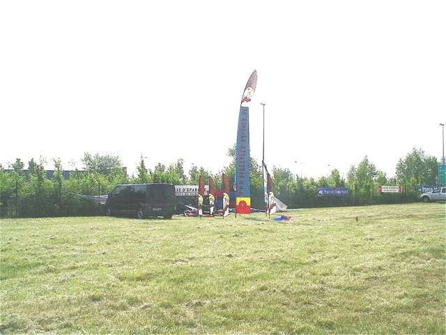
Tout autour, les campements se montent, comme ces Suisses de BergAdler (l'Aigle de Montagne) dont les bannières représentent la montagne... mais aussi un aigle.

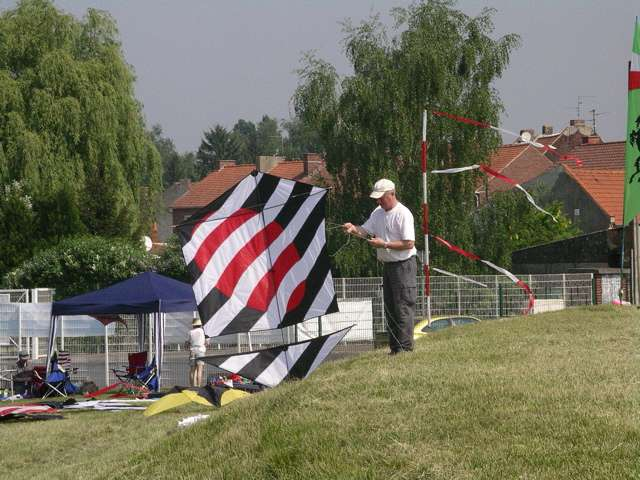
L'invité de marque est cette année, la Pologne. On connaît déjà Agneska qui vient aux festivals comme Berck et sert de traductrice. Il y a aussi un leader pétulant et Rafael (?) qui voulait construire un Albatros vu sur internet mais qui semble avoir reculé en le voyant grandeur nature avec toutes ses ficelles...

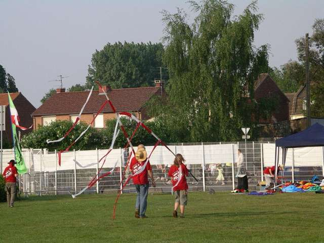
Ils ont aussi un uniforme à leurs couleurs (rouge et blanc) et des "bannières" un peu spéciales...

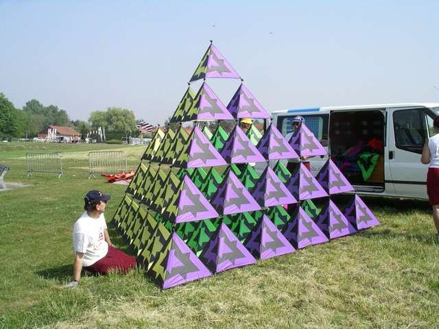
On voit aussi se monter un très beau Bell. C'est beau, mais comme CV, je n'ai jamais bien compris l'intérêt d'avoir autant de surfaces à 45 degrés du vent, au prix d'une complication sans nom et d'une fragilité garantie en cas de chute...

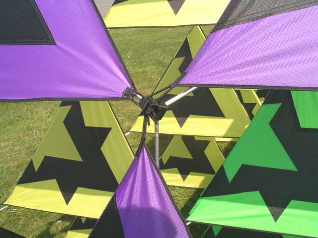
Pour la structure, ils ont créé ou trouvé des noeuds qui comportent aussi des taquets pour coincer les ficelles ou élastiques de tension des éléments ! En général, la structure suit les arêtes...

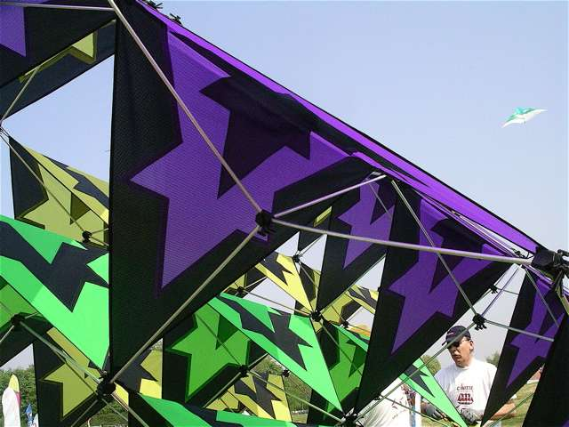
...mais eux ont créé une structure avec un noeud au centre de chaque élément... soit en gros 280 baguettes et plein de noeuds (à peu près, je n'ai pas compté...), quel courage ! Conclusion : splendide réalisation...

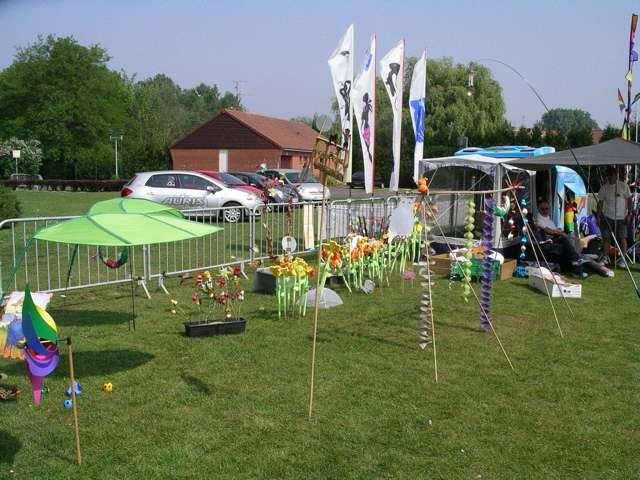
Les Hurricane sont venus avec leur incroyable roulotte à tout faire (sauf dormir) ! Ils ont étalé leurs JdVs. J'aime bien les grandes feuilles vertes qui abritent les hamacs des grenouilles, et les fleurs pelucheuses que l'on a envie de caresser...

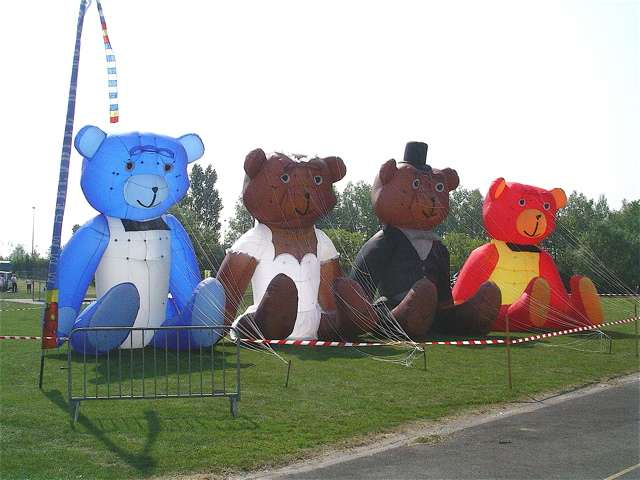
Le mariage nounours est de la partie... Les propriétaires prévoyants ont apporté une soufflerie pour les gonfler assis, comme en vol de nuit à Berck...

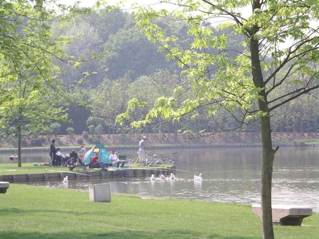
Sur le grand étang, les pêcheurs s'entraînent pour le concours de pêche de dimanche...

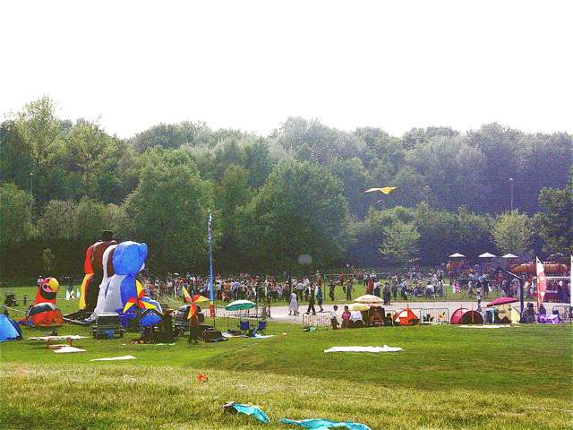
Il y aura contre vents et marées (ou plutôt absence du tout) des lâchers de bonbons et de nounours. Méthode : on court pour décoller un grand delta avec le sac, et une ficelle spéciale sert à ouvrir ce dernier quand il est assez haut !

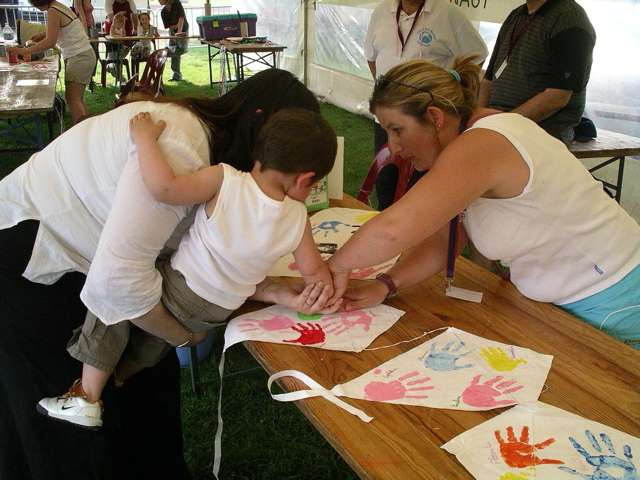
Deux ateliers, un pour l'arche, que les gamins décorent en trempant la main dans la peinture de leur choix... Bonne idée, c'est rapide, simple et très décoratif...

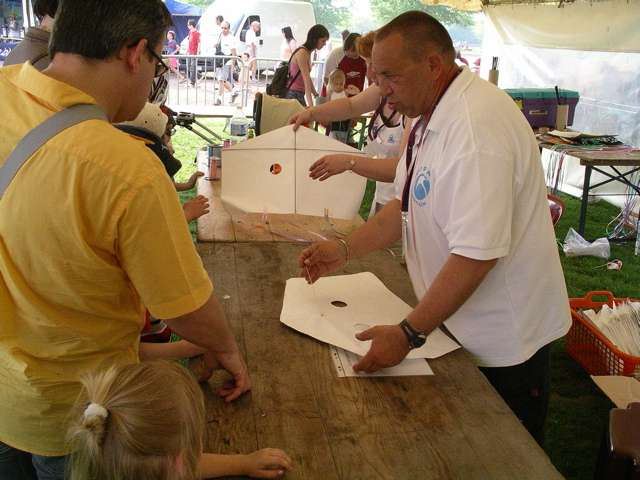
L'autre atelier pour des "fantômes" que les enfants décorent si ils veulent et si on a le temps !
La famille Tozzolini s'emploie à fond, comme pour tout le reste !

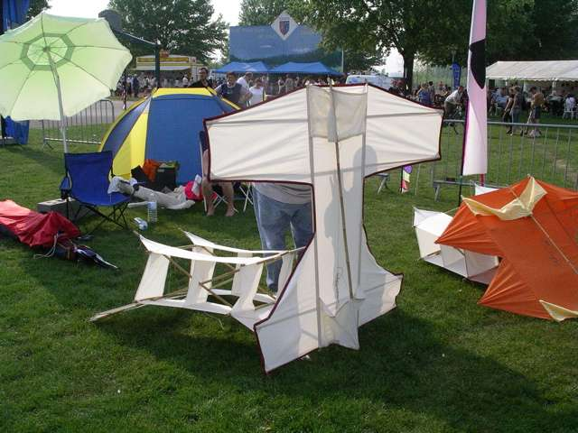
Dominique Cotard (Historic, Bambou-coton) est présent avec ses re-créations, Saconney ou autres...

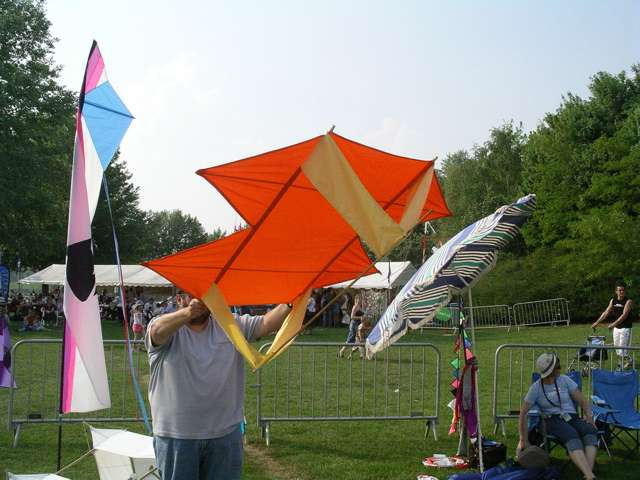
Ou encore le Houard qui sera l'objet d'un "workshop" au Musée de l'Air le 15 septembre !

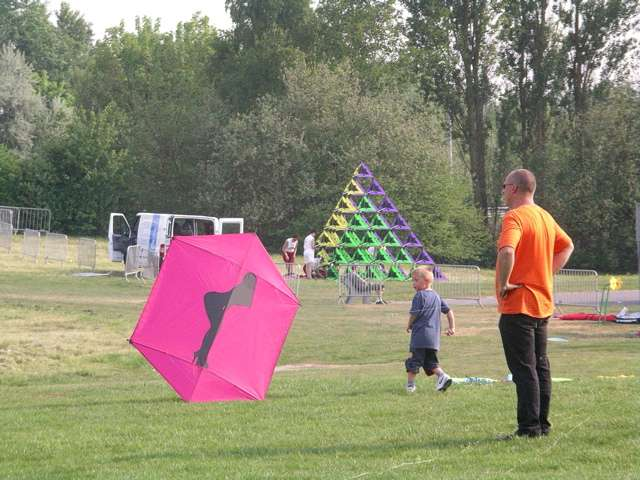
Dans le moderne, mais classique, ce Rokkaku à la décoration coquine...

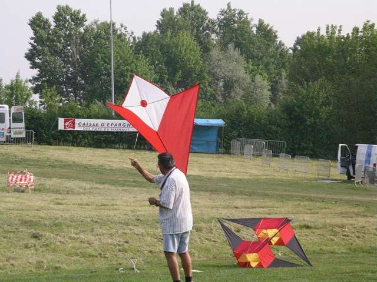
Concours Blanc et Rouge en l'honneur de la Pologne. François a construit ce Jessie sur un modèle de Sylvien !

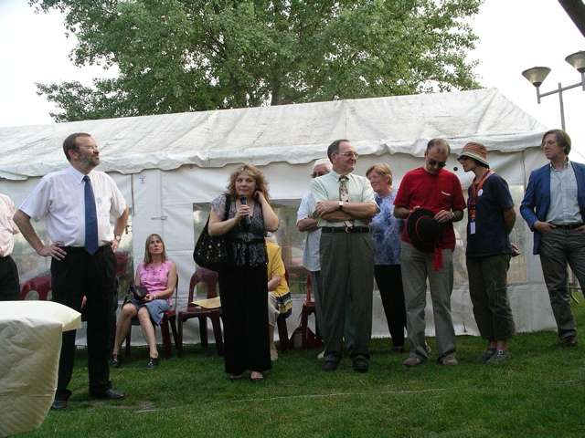
Au soir, pot avec allocutions diverses, en présence de madame la représentante de la consule de Pologne.

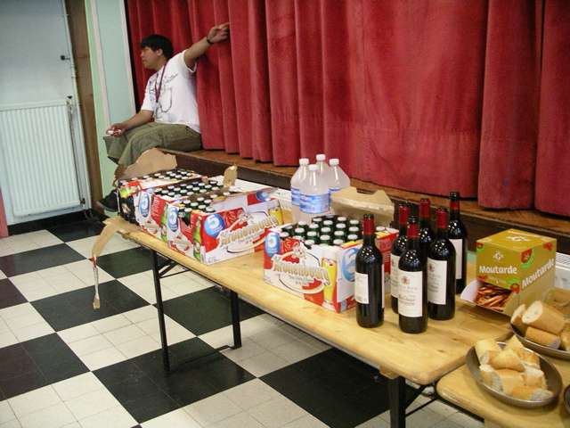
Le samedi soir, pas de vol de nuit, mais banquet dans la salle de Somain. Il y a une bonne provision d'ingrédients, pourvu qu'il n'y ait pas de gendarmes à la sortie...

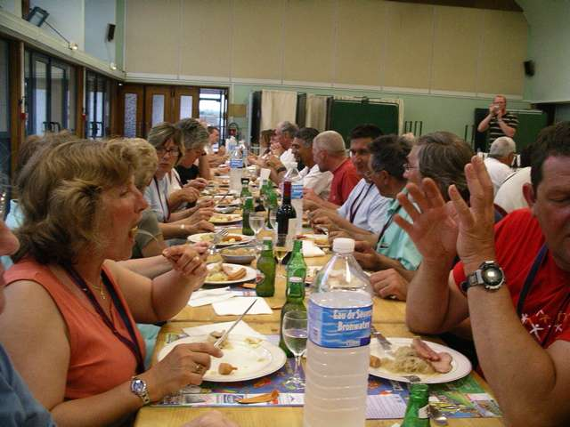
Au menu, choucroute-bière, ou Bordeaux, il y a même de l'eau pour ceux qui veulent...

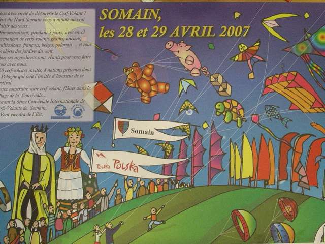
Il y a même des sets de table spécialement réalisés pour l'évènement...

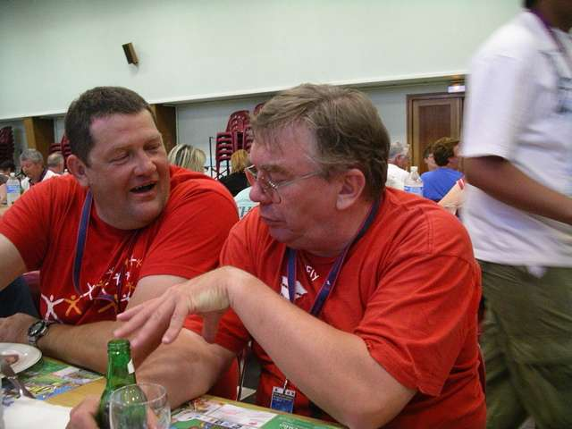
Nos amis anglais sont là, toujours prêts à faire la fête (mais ils volent beaucoup aussi) ! Avec Thierry le Fécampois, ça fait une belle équipe (en rouge, en l'honneur de la Pologne ?)...

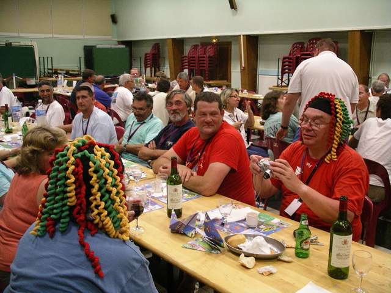
Ils ont même apporté des accessoires pour paraître Rastas ! Et madame est amateur de pliages, des oiseaux qui battent des ailes...

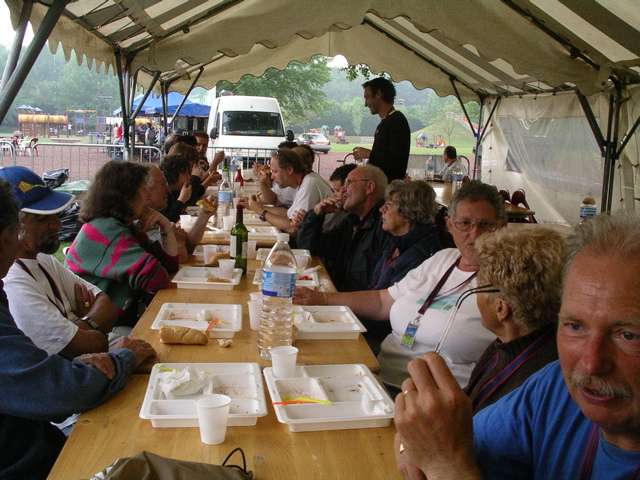
Dimanche midi, c'est plus frugal, plateaux, deux services pour que les CVs restent en l'air et soient surveillés.

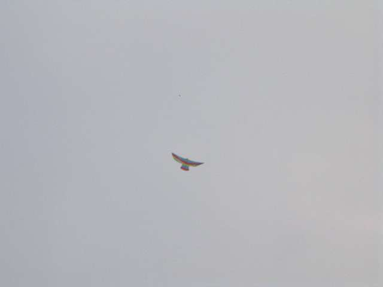
Sur le terrain, un oiseau en tissu dégradé, il est un peu haut pour que je le voie bien, la structure a l'air assez simple...

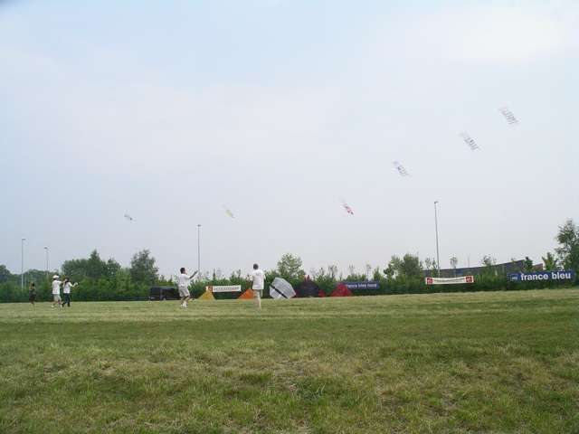
Peu de vent, Hurricane organise des envols groupés et marchés, mais des fois, les CVs restent en l'air sans même avoir à courir, le vent monte !

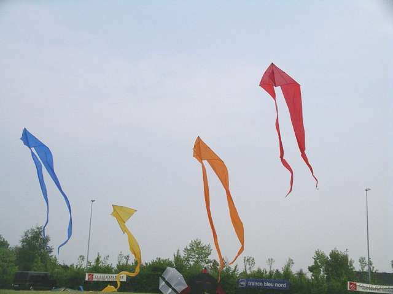
Envol de 4 pyrodeltas aux couleurs assorties...

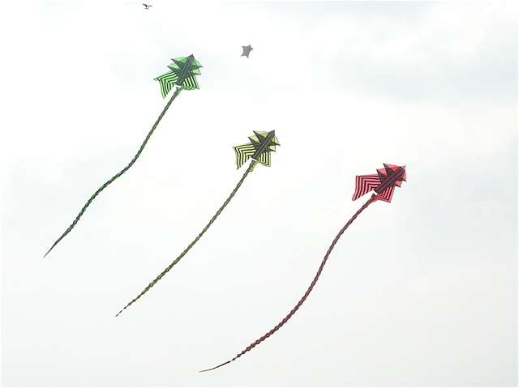
Envol de 3 diables aux dimensions impressionnantes !

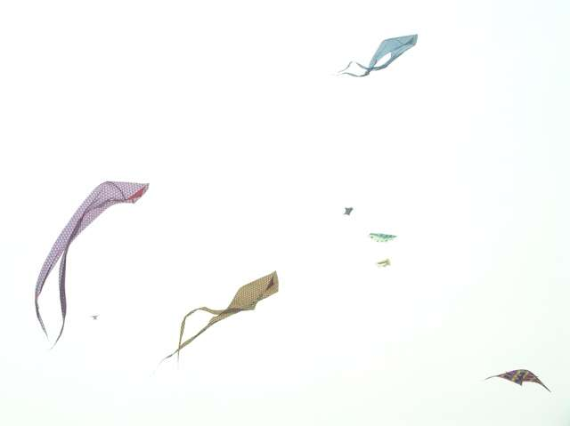
Envol de deltas en tissu imprimé. Je me ferai aussi mon envol groupé de 1 Albatros, pour montrer la bête aux Polonais, et finalement, il restera en l'air tout l'après-midi, sauf pauses-réhydratation !

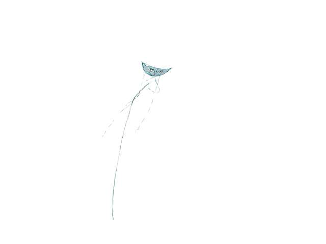
A qui est ce beau chat stylisé ? A Emmanuel, bien sûr. Il a aussi ses JdVs-chats sur la butte derrière...

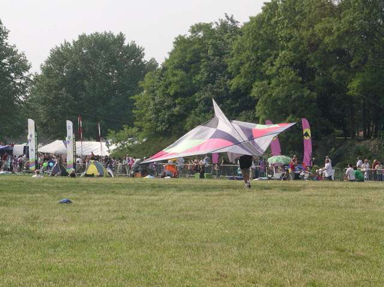
Ce très grand delta (8 m ?) est particulier, sa quille inférieure comporte un tube qui dresse vers le haut une autre quille au-dessus... Je ne sais pas l'importance de l'amélioration apportée...

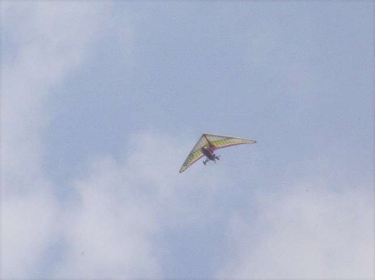
Un ULM pendulaire est venu voir de haut ces curieux cousins, immobiles à son échelle !

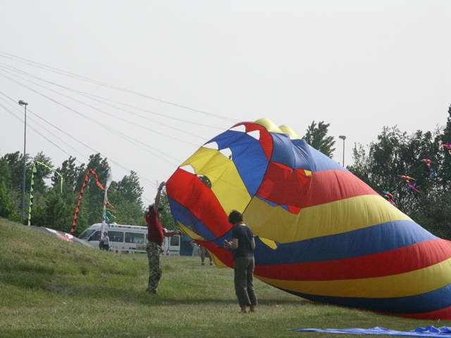
Les Polonais ont sorti un grand flow-form rouge et... noir sous lequel ils accrochent cette grosse turbine...

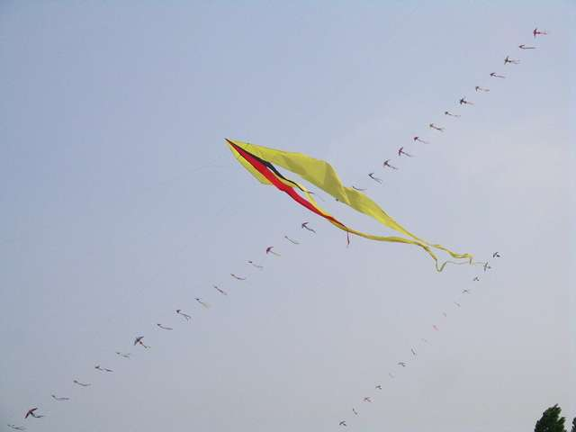
Devant les trains de perroquets exotiques, cette sorte de pyrodelta à 5 queues est aussi bien coloré !

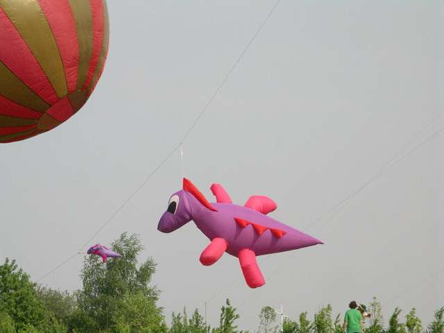
Parmi les gonflables, ce relativement petit Casimir reste bien naïf, comme son modèle !

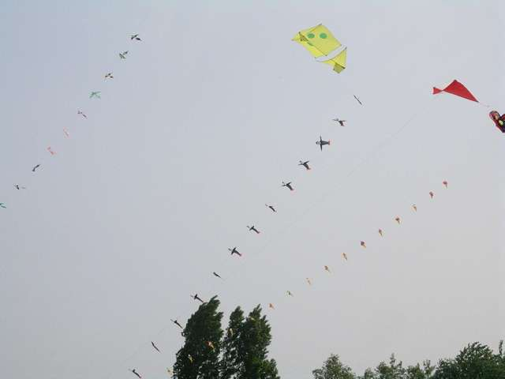
Les trains sortent des hangars à qui mieux mieux. Voilà même des pingouins, maintenant, malgré la chaleur !

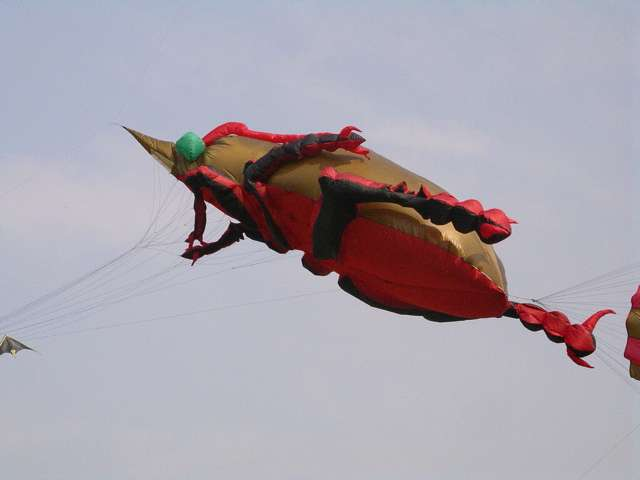
Les Sens Ciel sont contents, après avoir longtemps rechigné, le Cafard doré a réussi non seulement à se gonfler, mais même à décoller (sous un porteur, bien sûr)...

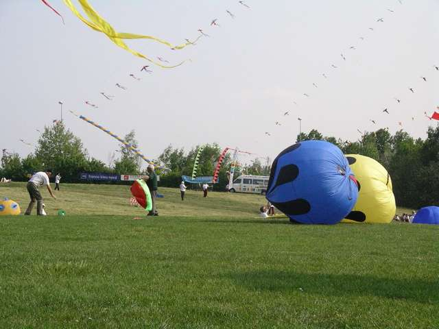
De magnifiques Chiens-de-Plage courent sur la prairie ! Des Chiens-de-Prairie, alors ?

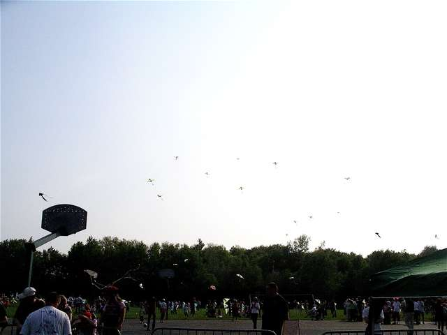
On peut aussi acheter la Voix du Nord, avec en prime un cerf-volant qui marche très bien, genre delta Conyne avec une queue. Il y en a un paquet sur le terrain de foot...

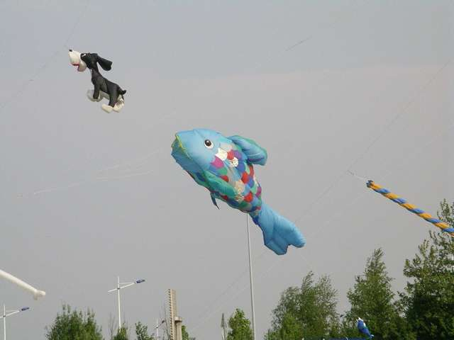
Les enfants peuvent aussi admirer le poisson Arc-en-Ciel, vedette de la télé !

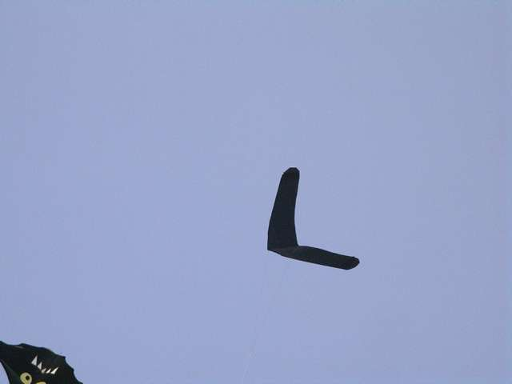
La Pologne a sorti ce drôle d'oiseau, pas très gai mais sans doute un proto en plastique à base delta, qui vole plutôt bien !

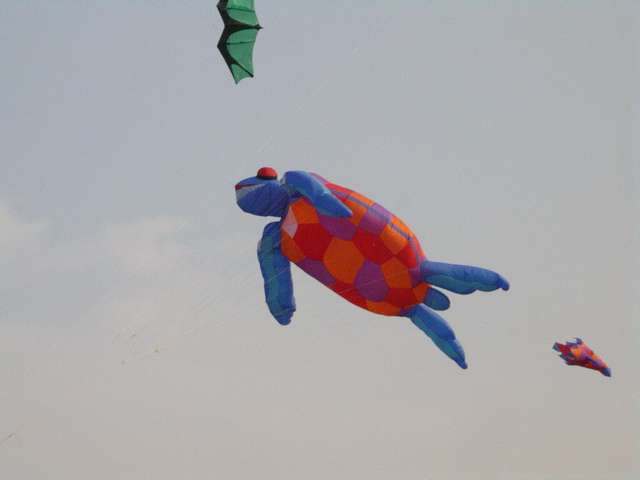
Cette tortue, elle, a de la surface portante, le porteur ne fait que la stabiliser !

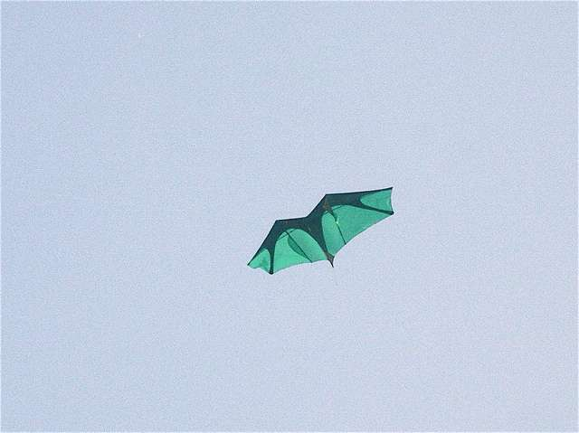
Les Polonais ont aussi sorti ce drôle de Faga bipointe, dont j'ai déjà vu la forme, avec éventuellement l'arrière en zigzag aussi (pour échapper aux radars aériens comme le B2 ?).

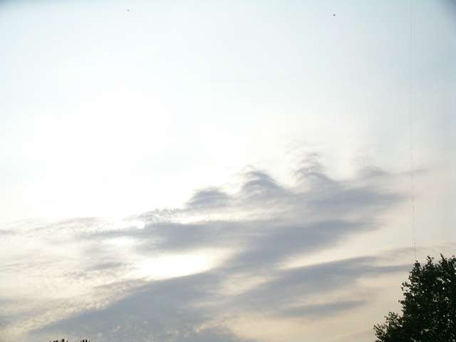
En fin d'après-midi, les cumulus se développaient hier, et au soir on a eu un coup de vent, mais pas de grêle comme l'année dernière ! Cette année, le festival se termine bien, un voile de nuages hauts amusants, et on n'en finit pas de prolonger, personne n'est pressé de partir...

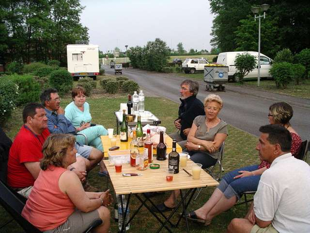
Les camping-caristes ont du temps devant eux, ils partiront demain matin ! Alors on termine la soirée ensemble, au calme.

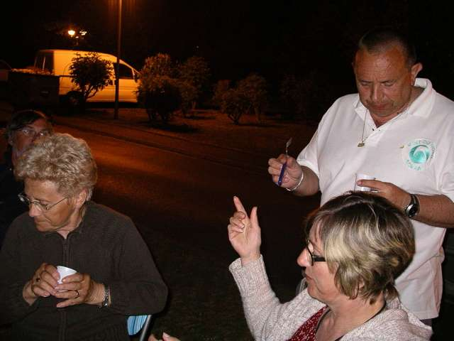
Christian fait des allers-retours pour résorber tout le bazar, et il y en a ! Il fait quand même une petite halte pour un café bien mérité...
Bon, eh bien un petit retour touristique tranquille s'impose, avec une halte pique-nique en forêt de Compiègne !

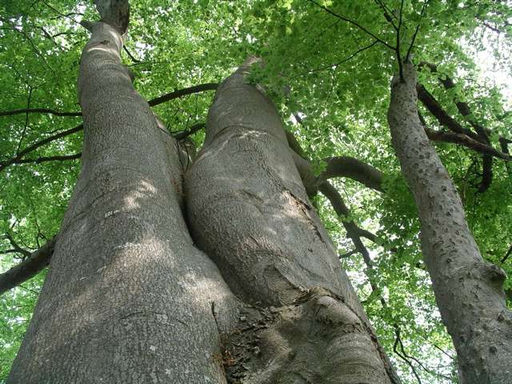
Somain, on y revient, mais faut en partir : 3,5 km de bouchons sur l'autoroute cette année, Fabian vise 5 km l'an prochain !